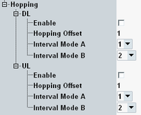

The parameters in this section configure frequency hopping between narrowbands for the scheduling type "eMTC Auto Mode". The other scheduling types do not use repetitions.
For some transmissions, frequency hopping is mandatory and configured automatically as specified by 3GPP. The settings in this section are not relevant for mandatory frequency hopping.
The settings apply to all transmissions with optional frequency hopping. You can configure hopping separately for the DL and the UL.

Enables or disables frequency hopping.
Remote command:Specifies the size of one frequency hop. The unit is narrowbands.
Remote command:Specifies the time interval between two hops for CE mode A. The unit is subframes.
Remote command:Specifies the time interval between two hops for CE mode B. The unit is subframes.
Remote command: